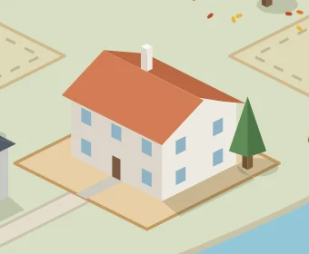
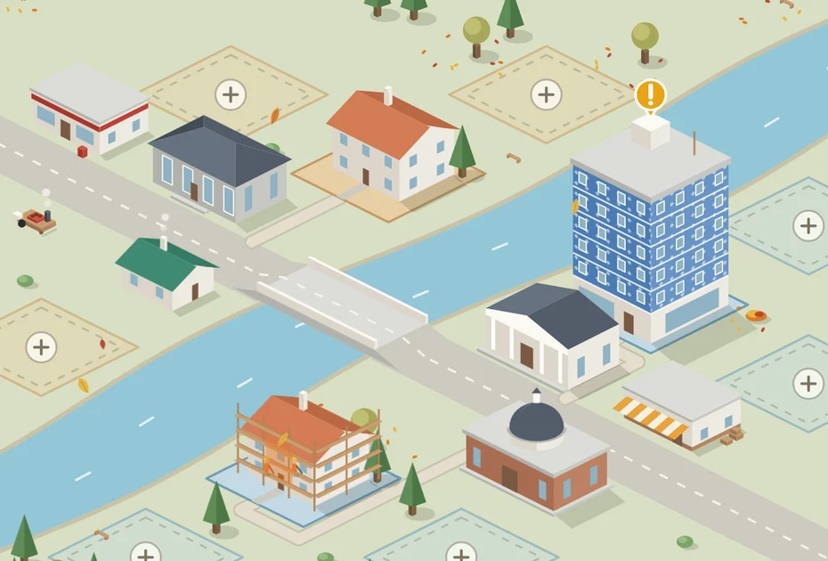
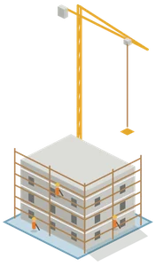
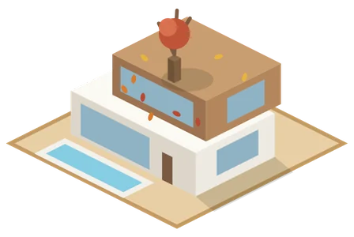
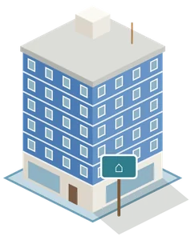
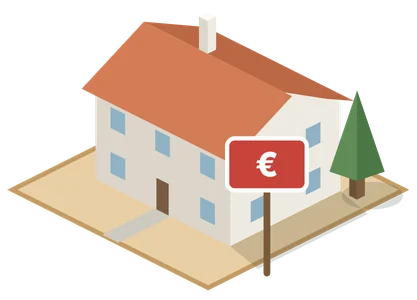
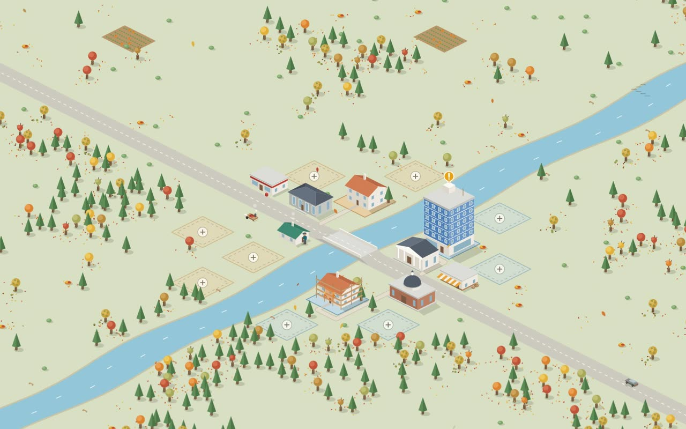

House · Gaia
Maria's house
Expenses this month€312
Boiler warranty34 days
IMI, 2nd instalmentAugust
In testing, by invitation
A neighbourhood of your own, where every home keeps its history from build to sale. And a helper who finds any invoice and always says where it came from.
No ads, ever. And you can always export everything.
Two places, the same homes
On the Map you see everything at once and know straight away where something needs your attention. Step into a home and you're in the Portal, where everything gets sorted.

Your homes on one side of the river, your investments on the other. An exclamation mark when deadlines are close, scaffolding when there are works and cranes on new builds. And the seasons pass through too.
The map is full of details and animations for you to look at and discover as you go.
Expenses, reminders, documents, warranties, works and rents, home by home or all together. A tab dedicated to analysis, for those who love numbers.
AI helper
A month's invoices, a home's documents, the payments for a stage of the works. It answers with the list and the documents, ready to open.
| Date | What | Amount |
|---|---|---|
| 10/11 | Annual boiler service · Gaia | €85 |
| 30/11 | IMI (property tax), 3rd instalment · Gaia | €214 |
| 02/12 | Home insurance · Porto | €186 |
| 15/12 | Last stage of the kitchen works · Porto | €942 |
A history for life
Every home keeps what happened to it. When you sell it, you hand the story to the buyer.




…and a few more surprises, inside.
Invoices
Every Portuguese invoice has a QR code with much more than the amount. Your helper reads it, keeps all of it and suggests the home and the category. If you gave your tax number (NIF) when you paid, it's in there too.
Electricity – SeptemberExample. Scan this code with your camera.
Source: the invoice QR code. Nothing is made up.

We're opening the neighbourhood little by little. Come in with your invitation and build your first home.
Enter the neighbourhood